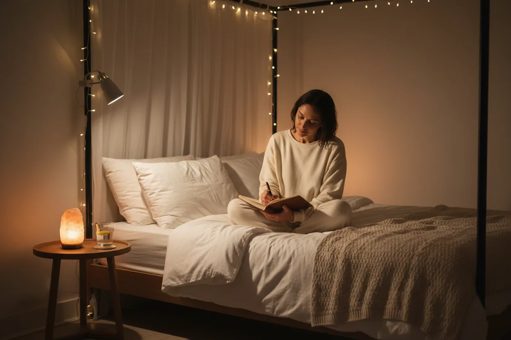
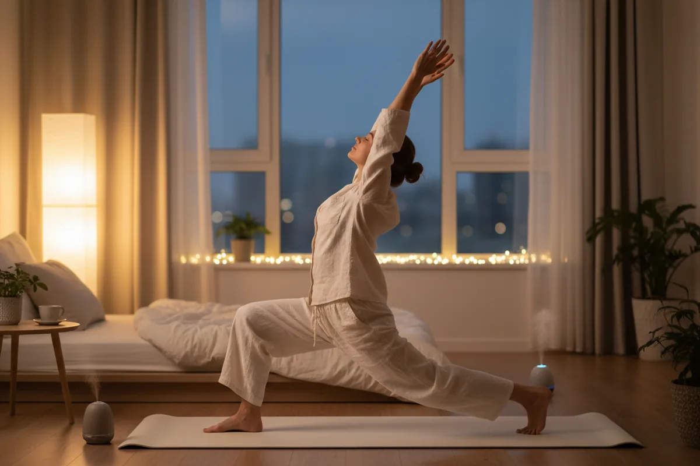

Best Bedtime Routine for Busy Adults
Struggling to unwind after a long day? Discover a simple, realistic bedtime routine for busy adults over 30 that helps you fall asleep faster — no complicated rituals required.

What Is the Best Bedtime Routine for Busy Adults Who Struggle to Unwind?
Creating a simple bedtime routine for busy adults over 30 to fall asleep faster doesn't require candles, supplements, or a perfect schedule. What it does require is a system that helps your body and mind slow down—consistently.
If you've ever gone to bed tired but stayed awake thinking, scrolling, or stressing, this guide will simplify everything. You'll learn how to build a routine that is easy to follow, repeatable, and actually works in real life.
Why Most Bedtime Routines Fail (and How to Fix It)
The Problem with Overcomplication
Most routines fail because they're unrealistic. Long rituals, strict rules, or "perfect" environments don't work when you're tired at the end of a long day.
You don't need more steps—you need fewer, better ones.
The Real Goal: Consistency Over Perfection
A simple bedtime routine works because it removes decision-making.
Instead of asking:
"What should I do before bed?"
You already know.
Key mindset shift:
A routine you follow most nights beats a perfect one you abandon after a week.
The Foundation of a Simple Bedtime Routine
Create a Clear "End of Day" Signal
Your brain doesn't automatically know when the day is over.
You need a repeated signal that says:
"We're done."
This could be:
Writing tomorrow's tasks
Turning off lights
Washing your face
The action matters less than the consistency.
Reduce Stimulation Gradually
You can't go from full activity to deep sleep instantly.
Instead, lower stimulation step by step:
Less light
Less noise
Less mental input
Think of it as dimming your whole system—not flipping a switch.
Keep It Simple and Repeatable
If your routine feels like work, you won't stick to it.
The goal is:
Same steps
Same order
Every night
That's how your brain learns to fall asleep faster.
Step-by-Step: Build Your Bedtime Routine in 30–45 Minutes
Step 1 – Close the Day (Mental Shutdown)
Before anything else, clear your mind.
What to do:
Write 3 priorities for tomorrow
Note anything unfinished
This removes the need for your brain to "hold onto" tasks overnight.
Step 2 – Dim Lights and Disconnect
Light is one of the strongest signals to your brain.
What to do:
Turn off bright lights
Switch to warm lighting
Reduce screen exposure — if you still use screens in the evening, Blue Light Blocking Glasses can significantly reduce the impact on your melatonin levels
If you still use your phone:
Avoid social media, news, and work content.
Step 3 – Use a Physical Reset
You need a physical transition into rest.
Options:
Warm shower — want to enhance the wind-down effect? Organic Magnesium Lotion applied after a shower helps relax muscles and supports deeper sleep
Washing your face
Brushing teeth slowly
This tells your body:
"We're shifting into sleep mode."
Step 4 – Calm Your Mind
This is where most people struggle.
Choose one simple method:
Brain dump:
Write everything on your mind
Breathing:
Inhale 4 seconds
Hold 4 seconds
Exhale 6 seconds
Gratitude:
Think of 3 good things from today
The goal is not perfection—it's slowing your thoughts.

Step 5 – Low-Stimulation Activity
Now you need a bridge between awake and asleep.
Good options:
Reading a book — want a screen-free reading experience? The Amazon Kindle Paperwhite uses a warm, non-backlit display that won't disrupt your melatonin
Light stretching
Calm music
Avoid anything stimulating or emotionally engaging.
Step 6 – Go to Bed Only When Sleepy
This is a game-changer.
Don't go to bed just because it's "time."
Go when:
Your eyes feel heavy
You're yawning
Your focus drops
This trains your brain to associate bed with sleep—not thinking.
The 10-Minute Version (For Busy Nights)
You won't always have time—and that's fine.
Minimum Viable Routine
Do this instead:
Write tomorrow's top tasks
Dim lights
Wash face / brush teeth
Do 2–3 minutes of breathing
That's enough to maintain the habit.
The System That Makes It Stick
Use the Same Sequence Every Night
Order matters more than duration.
Example:
Close day → Dim lights → Wash → Calm mind → Relax
Your brain learns the pattern.
Attach It to Existing Habits
Make it automatic by linking it:
After brushing teeth → breathing
After shower → dim lights
No extra thinking required.
Remove Friction
Make your routine easy:
Keep a notebook by your bed
Use warm lighting already set up — a Sunrise Alarm Clock with White Noise doubles as a gentle wake-up light and a sleep sound machine, removing two friction points at once
Have a book ready
The easier it is, the more consistent you'll be.
Common Mistakes That Ruin Sleep
Scrolling in Bed
This keeps your brain alert and delays sleep.
Fix:
Keep your phone away or set a cutoff time.
Late Caffeine
Caffeine stays in your system for hours.
Fix:
Avoid it in the afternoon and evening.
Irregular Sleep Timing
Sleeping at different hours confuses your body.
Fix:
Keep a consistent window—even if not perfect. A White Noise Sound Machine can help you fall asleep at the same time each night by masking disruptive sounds.
Trying to Force Sleep
The more you try, the harder it becomes.
Fix:
Focus on relaxing, not sleeping.
Sample Simple Bedtime Routine
Here's a realistic example for busy adults over 30:
10:15 PM
Write tomorrow's tasks
10:20 PM
Dim lights, stop screens
10:25 PM
Wash up or shower
10:35 PM
Breathing or journaling
10:45 PM
Read or relax
11:00 PM
Sleep
How to Stay Consistent (Even When Life Gets Busy)
Focus on Minimum, Not Perfect
Even a short routine counts.
Consistency builds results—not intensity.
Follow the 80/20 Rule
Most nights structured
Some nights flexible
This keeps the routine sustainable.
Think in Systems, Not Motivation
Motivation fades at night.
A system runs automatically.
Instead of:
"What should I do tonight?"
You already know the steps.
The Psychology Behind Falling Asleep Faster
Repetition Trains Your Brain
Do the same routine nightly, and your brain starts preparing for sleep automatically.
Reduce Mental Load
The fewer decisions you make at night, the easier it is to relax.
Identity Shift
Start seeing yourself as:
"Someone who has a simple, consistent night routine."
This reinforces the habit.
Quick Checklist: Your Simple Bedtime System
✔ Clear end-of-day signal
✔ Reduced light and screen exposure
✔ Short mental reset
✔ Low-stimulation activity
✔ Consistent sequence
✔ Flexible (not perfect)
Final Thoughts
Building a simple bedtime routine for busy adults over 30 to fall asleep faster isn't about doing more—it's about doing less, consistently.
When your nights follow a predictable pattern, your brain stops fighting sleep.
If you're still waking up exhausted despite a full night's rest, read this next: Why Am I Always Tired Even After 7–8 Hours of Sleep?
And if stress is keeping you up at night, this guide can help: How to Improve Sleep Quality With a Busy and Stressful Schedule
Start small. Keep it simple. Repeat what works.
That's how better sleep becomes automatic.
Affiliate links below — I only recommend products I genuinely believe in. Purchasing through these links supports this blog at no extra cost to you.
Here are the top tools to help you build a better bedtime routine: